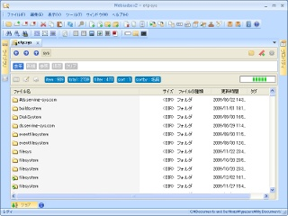
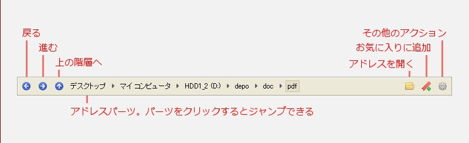
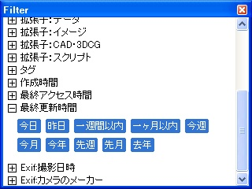
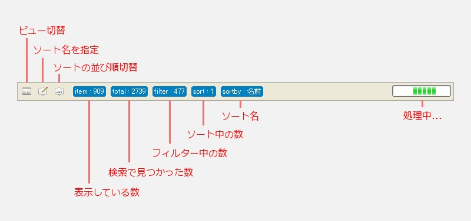

Mebiusbox 2.x ユーザーガイド
ワークスペース
Mebiusbox2 でのメイン画面です。

上から「タブコントロール」「アドレスバー」「フィルターバー」「コントロールバー」「ビュー」となっています。
アドレスバー

フィルターバー

フォルダ内のアイテムをフィルタリングするための設定エリアです。
「新規」「参照」「保存」「クリア」はシステムボタンで、それ以外がフィルターとなります。
「参照」ボタンを押すことで、フィルター選択ウィンドウが表示されます。

適用したいフィルターを見つけたら、それをフィルターバーの領域へドラッグ＆ドロップします。

複数のフィルターを設定している場合は「AND」処理されます。
フィルターを除去したい場合は「クリア」ボタンを押してください。
また、個々に除去したい場合は、除去したいフィルターをフィルターバーの領域外へドラッグ＆ドロップしてください。
「新規」では新しいフィルターを一時的に作成します。
「保存」は現在設定されているフィルターを新しいフィルターとして保存します。
コントロールバー

Mebiusbox2 では、並列処理をしており、非同期で動作します。
そのため、ビューにアイテムが表示されても、すべてのアイテムが表示されている訳ではありません。
「total」の数がフォルダ内の総アイテム数で、「item」の数が、フィルターを通して実際に表示されている数になります。
「filter」は現在フィルタリングしているアイテム数で、「sort」はソート中のアイテム数です。
フォルダ内のアイテムを検索中、もしくはフィルタリング、ソートをしているときは右側のプログレスバーが表示されます。
このプログレスバーが表示されているときは、まだ表示されていないアイテムが存在していると思うといいかもしれません。